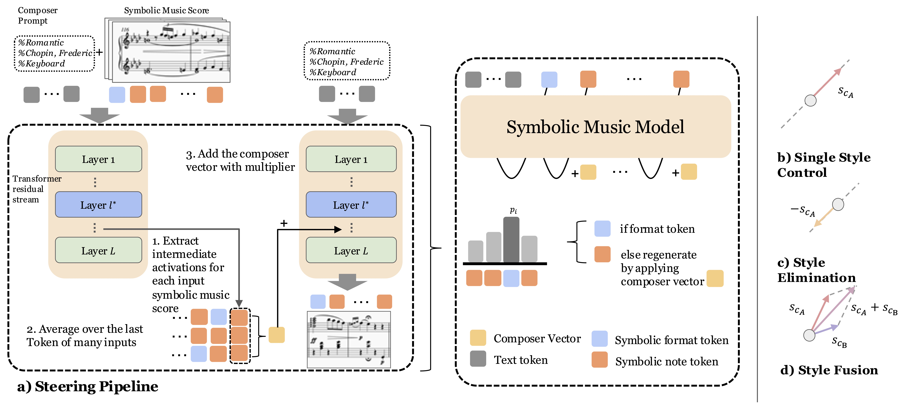

Abstract
We introduce Composer Vector, a training‑free, inference‑time steering method for controllable symbolic music generation. By injecting a style vector into hidden states with a tunable coefficient, we enable single‑style control, multi‑style blending, and continuous interpolation. Please see the paper for details.
Method
Audio / Symbolic Examples
Listen to examples of original compositions and their style-steered versions using our Composer Vector method.
Experiment 1
Bach — Original
Bach — Steered to Mozart (0.5)
Beethoven — Original
Beethoven — Steered to Mozart (0.5)
Chopin — Original
Chopin — Steered to Mozart (0.5)
Experiment 2
Bach — Original
Bach — Mixed with Mozart
Beethoven — Original
Beethoven — Mixed with Mozart (0.8)
Chopin — Original
Chopin — Mixed with Mozart (0.5)
Experiment 3
Bach — Original
Bach — Mixed with Mozart (0.1/0.9)
Beethoven — Original
Beethoven — Mixed with Mozart (0.3/0.7)
Chopin — Original
Chopin — Mixed with Mozart (0.3/0.7)
BibTeX
@inproceedings{jiang2025composervector,
title={Composer Vector: Style-Steering Symbolic Music Generation in a Latent Space},
author={Jiang, Xunyi and Others},
booktitle={NeurIPS 2025 Workshop on AI4Music},
year={2025}
}